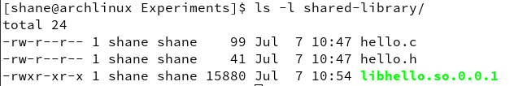
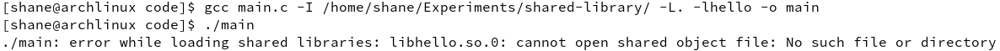
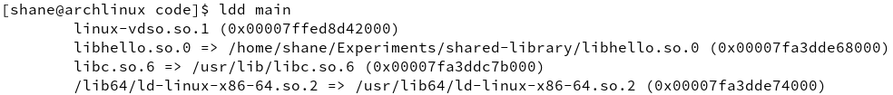
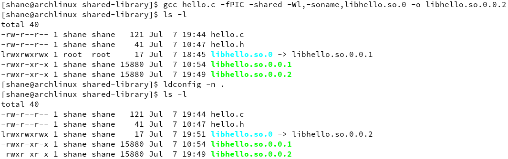
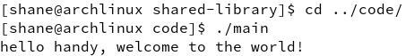

This article mainly introduces the statics library and shared library on Linux and has done some experiments for better comprehension.
静态库(static library)
Static library，又称为归档文件(archive). 在Linux系统中一般以.a作为后缀名.用以声明除了C语言标准库之外的库文件的目录. 这个声明是静态的,也就是说,当许多应用程序同时运行并且都是用来自同一个函数库的函数时,在内存中就会存有这个函数的多份拷贝.这将大量消耗内存和磁盘空间. 类似与Windows中的静态链接库.lib文件
共享库(shared library / dynamic library)
共享库克服了静态库的不足,典型的后缀名是.so。类似与Windows下的dll文件。
In Arch Linux, the paths of shared library files are declared in /etc/ld.so.conf. You can add your specified path into this file and then using sudo ldconfig for generating their so-name files if there is update of these library files happening.
The naming suggestion of Linux shared library
Every shared library has its filename and so-name(Short for shared Object name, 简单共享名). The following naming rules are commonly obeyed:
filename: libname.so.x.y.z
so-name: libname.so.x
x 代表了主版本号，主版本号之间不同通常是无法相互兼容的。
y 代表次版本号，可以向下兼容。
z 代表发布版本号，之间可以相互兼容。
当运行 ldconfig 命令后，系统会为制定目录下面的动态库文件新建与 so-name 同名的软链接。当编译完程序需要链接的时候，查找的就是这些对应的 so-name。可以用环境变量 LD_LIBRARY_PATH 指定so-name files所在的目录。
First experiment
Supposing that we want to create a shared library for calling function hello declared by hello.h, we start by writing our code here:1
2
3
4
5
6
7// hello.c
void hello(const char* name)
{
printf("hello %s!\n", name);
}
1 | // hello.h |
Then we compile it by gcc to generate shared lib:1
gcc hello.c -fPIC -shared -Wl,-soname,libhello.so.0 -o libhello.so.0.0.1
Let me explain every option of the above command. -fPIC means generating position independent code, i.e., address jumping is relative rather than absolute. This option is required in generating library file because lib file usually locates at some place and is called by programs from other places, or the program is generated at some place but is moved to other path. -shared -o indicates a shared library file .so.x.y.z. And -Wl,-soname,libhello.so.0 specifies its so-name as ‘libhello.so.0’.
Now we check our files and should see a new file like this picture:

Next we update by ldconfig1
ldconfig -n shared-library/
Note that -n specifies the dir only being processed(Because we only created one lib file under shared-library, it has no need to update all). If you have added the path into /etc/ld.so.conf, you can also simply run sudo ldconfig and see the same change:
As we can see, the so-name symbolic link has been created. Now we can test this new lib by writing a test code:1
2
3
4
5
6
7
8// main.c
int main()
{
hello("handy");
return 0;
}
Then we create a symbolic link to the so-name file in order for gcc compiler specification:
Now we make these three stages of shared library prepared(.so, .so.x and .so.x.y.z), then we compile and link, with relevent paths specified:1
gcc main.c -I /home/shane/Experiments/shared-library/ -L. -lhello -o main
where -I specifies the path of hello.h, -L for the path of libhello.so.

Since we have specified the path of so-name to gcc compiler but have not done that for Linux executer(one of the features of shared library), an error of failing to find the so-name file appears when running the program. So we use LD_LIBRARY_PATH to set it and run again:1
export LD_LIBRARY_PATH="$HOME/Experiments/shared-library/"

More exploration
用ldd查看其依赖的动态库:

我们发现main程序依赖的动态库名字是libhello.so.0，既不是libhello.so也不是libhello.so.0.0.1。其实在生成main程序的过程有如下几步：
- 链接器通过编译命令-L. -lhello在当前目录查找libhello.so文件
- 读取libhello.so链接指向的实际文件，这里是libhello.so.0.0.1
- 读取libhello.so.0.0.1中的SONAME，这里是libhello.so.0
- 将libhello.so.0记录到main程序的二进制数据里
所以你看，程序并不知道 so-name file 在哪里，我们当然要在运行程序前 specify 一波了。
Second experiment
Now we emulate the situation of updating lib files. Suppose that we modify our code:1
2
3
4
5
6
7// hello.c
void hello(const char* name)
{
printf("hello %s, welcome to the world!\n", name);
}
Since the change is trivial, we keep the so-name when compiling:1
gcc hello.c -fPIC -shared -Wl,-soname,libhello.so.0 -o libhello.so.0.0.2
Now there are two versions exist, we update by ldconfig and see the change:

The so-name file link to the new version of lib file. And we run the program and see the immediate change:

So you see, this is the significance or the essence of so-name mechanism. We don’t have to re-link the program after modifying the shared library code.
Summary
In practical production, the compilation and execution are usually departed. Generally:
- specify the so-name when generating shared lib files
- Ensure the availability of libXXX.so file by
-Land-lwhen linking executable program - Ensure the existence of shared lib file and use
LD_LIBRARY_PATHto specify the directory of its so-name link when running program
References
Linux程序编译链接动态库版本的问题: https://blog.csdn.net/littlewhite1989/article/details/47726011